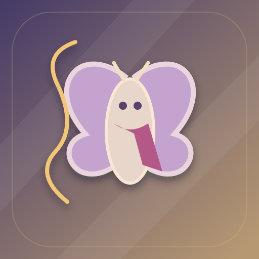

<- all projects

Fio da Aventura
PC
Volume
Live
Every swing leaves a new possibility.
Lume, a tiny moth, must stitch a valley's paths back together. Attach thread to brass rings, build momentum, let go at the right moment and bring a rescued pattern home, where its weight changes how you move. On safe ledges you can spend thread to stitch a bridge for the return trip. There are 30 routes across five textile environments, from Moss Valley to Satin Gorge, with six thread tools and twelve cargo patterns that change reach, elasticity and movement, plus expeditions, a daily route, free exploration and Cora's workshop for crafting tools.